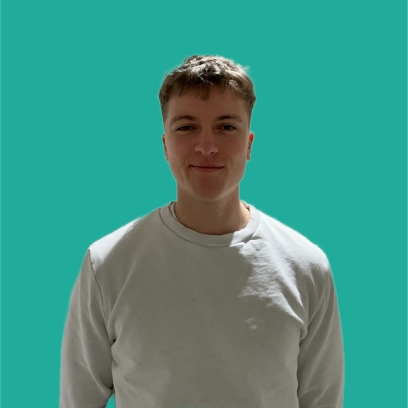

OPEN TO WORK : AOÛT 2026
L'Infrastructure IT avec
Rigueur & Endurance.
Étudiant en BTS SIO SISR & Alternant à la DGFIP. Je participe à la mise en œuvre de réseaux sécurisés et je veille à la disponibilité des services critiques.

Oskar Doutreligne
Admin Système & Réseau
Cyber
Réseau
Python
Architecture Réseau
Conception et sécurisation d'infrastructure, segmentation des flux, routage, administration de pare-feux.
Cybersécurité
Veille active sur les menaces. Application des bonnes pratiques de l'ANSSI (Mots de passe, Habilitations).
Soft Skills
Coureur de fond, j'applique la même résilience dans mes projets : gestion de l'effort et focus sur l'objectif.